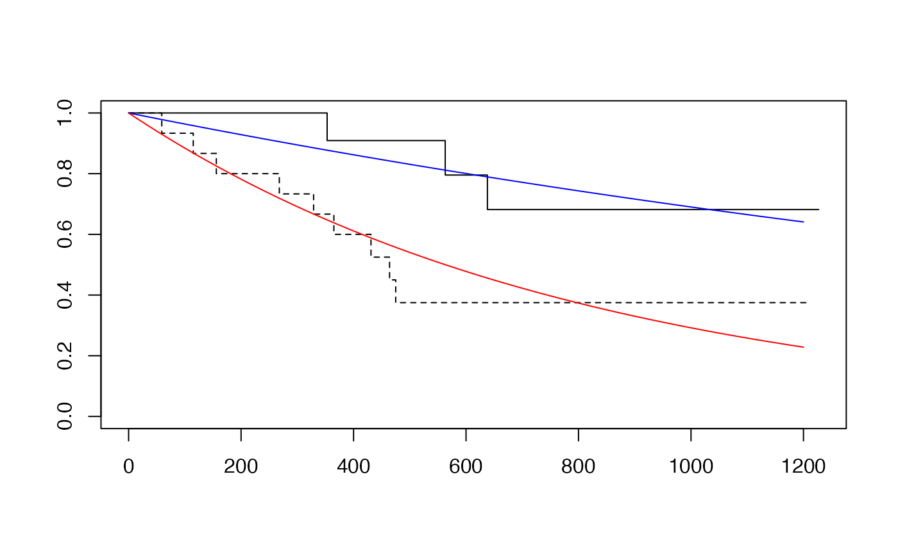

D4 Methods of comparing treatments
Vincent J. Carey, stvjc at channing.harvard.edu
May 22, 2026
Source:vignettes/D4_comparing_trt.Rmd
D4_comparing_trt.Rmd## Warning: multiple methods tables found for 'scale'## Warning: replacing previous import 'BiocGenerics::scale' by
## 'DelayedArray::scale' when loading 'SummarizedExperiment'Comparing cancer treatments
In section C2 we learned how to interpret survival curves, which indicate the probability of surviving beyond a given period of time from diagnosis of disease.
In this section we will examine data from a study published in 1979, that is conveniently available with R’s survival package.
The citation for the study is
J H Edmonson, T R Fleming, D G Decker, G D Malkasian, E O Jorgensen, J A Jefferies,
M J Webb, L K Kvols, Cancer Treat Rep . 1979 Feb;63(2):241-7.
Different chemotherapeutic sensitivities and host factors affecting prognosis in
advanced ovarian carcinoma versus minimal residual diseaseThe abstract is provided at the end of this vignette.
The data for the ovarian cancer study has the following form:
The variable description is
Format:
futime: survival or censoring time
fustat: censoring status
age: in years
resid.ds: residual disease present (1=no,2=yes)
rx: treatment group
ecog.ps: ECOG performance status (1 is better, see reference) We will consider three aspects of interpretation of these data.
Testing for treatment effect
survdiff(osurv~ovarian$rx)## Call:
## survdiff(formula = osurv ~ ovarian$rx)
##
## N Observed Expected (O-E)^2/E (O-E)^2/V
## ovarian$rx=1 13 7 5.23 0.596 1.06
## ovarian$rx=2 13 5 6.77 0.461 1.06
##
## Chisq= 1.1 on 1 degrees of freedom, p= 0.3Modeling the survival curves for the effect of residual disease
We can produce a very compact, two parameter model for the survival distributions for patients with and without residual disease.
##
## Call:
## survreg(formula = osurv ~ I(ovarian$resid.ds - 1), dist = "exponential")
## Value Std. Error z p
## (Intercept) 7.919 0.577 13.72 <2e-16
## I(ovarian$resid.ds - 1) -1.214 0.667 -1.82 0.069
##
## Scale fixed at 1
##
## Exponential distribution
## Loglik(model)= -96.1 Loglik(intercept only)= -98
## Chisq= 3.87 on 1 degrees of freedom, p= 0.049
## Number of Newton-Raphson Iterations: 4
## n= 26
ofit2 = survfit(osurv~ovarian$resid.ds)
plot(ofit2, lty=1:2)
tim = 1:1200
pp_nores = 1-pexp(1:1200, 1/exp(7.9)) # round parameter value
lines(tim, pp_nores, col="blue")
pp_res = 1-pexp(1:1200, 1/exp(7.9-1.2))
lines(tim, pp_res, col="red")
Exercises
D.4.1 Interpret confidence intervals for the one-year survival probabilities for the two treatments, ignoring the presence or absence of residual disease.
Answers
D.4.1 Abstract of 1979 paper:
Treatment of patients with advanced ovarian carcinoma (stages IIIB and IV) using
either cyclophosphamide alone (1 g/m2) or cyclophosphamide (500 mg/m2) plus
adriamycin (40 mg/m2) by iv injection every 3 weeks each produced partial
regression in approximately one third of the patients. Survival curves and
time-to-progression curves for the two regimens were nearly identical
in these patients with advanced disease. These same regimens produced different
results when used monthly in patients who had minimal residual
disease (stages II and IIIA). In patients with minimal residual disease
the therapeutic index of the combination regimen was superior to that of
cyclophosphamide alone. Prognosis was better overall among patients with
minimal residual disease than among patients with advanced disease. Within
the minimal-disease group grossly complete excision of tumor prior to
chemotherapy was associated with still better prognosis. Among patients
with advanced disease, prognosis was significantly better for older patients
despite their generally less favorable performance scores. Much
of this prognostic superiority appeared to be related to menopausal
status and presumably to the depletion of endogenous estrogens in the older patients.